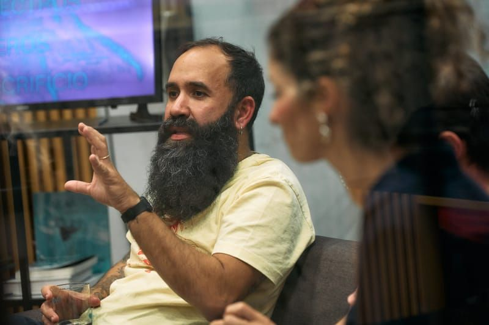

Pedro Vilela
Pedro Vilela (Recife, 1985) desarrolla su trayectoria científica y artística en las artes escénicas, articulando curaduría, creación escénica e investigación académica con un enfoque en el pensamiento descolonial, las políticas latinoamericanas y las cuestiones identitarias y raciales. Doctor en Educación Artística por la Universidad de Oporto y máster en Artes Escénicas por la Universidad Federal de Bahía, trabaja entre Brasil y Portugal.
Dirige el Trema! Festival desde 2012 y fue programador de CRL – Central Eléctrica entre 2019 y 2025. En 2023 concibió el Quilombo_TREMA!, dedicado a artistas negros, racializados e indígenas. Fundador de TREMA! Revista, colabora con plataformas críticas transnacionales como Performing Borders.
Ponencia: ¿Desde hace cuánto tiempo no estamos aquí?
Notas sobre ausencia, ruina y reexistencia como prácticas de permanencia en las artes escénicas portuguesas
Esta intervención resulta de la reelaboración de una parte de la investigación desarrollada en la tesis doctoral del autor, en el marco de la Beca Magaly Muguercia del Programa Iberescena. Desde una perspectiva situada, interroga la permanencia de la colonialidad como régimen activo de organización del presente.
El concepto de performar la ruptura constituye el eje central de la reflexión: una práctica corporal, temporal y política que interviene en las formas de ver, sentir, narrar y validar la experiencia histórica y social. Propone pensar la curaduría como una práctica de mediación, confrontación y reparación simbólica.